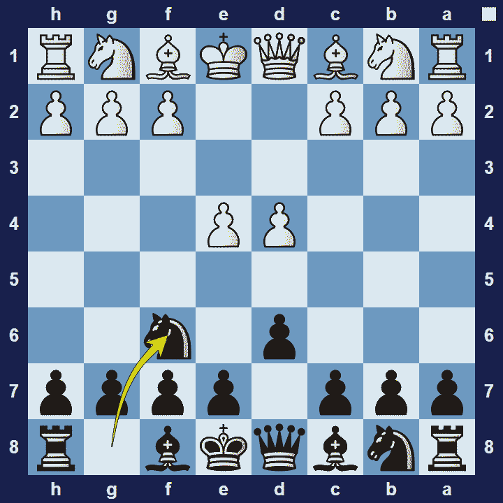
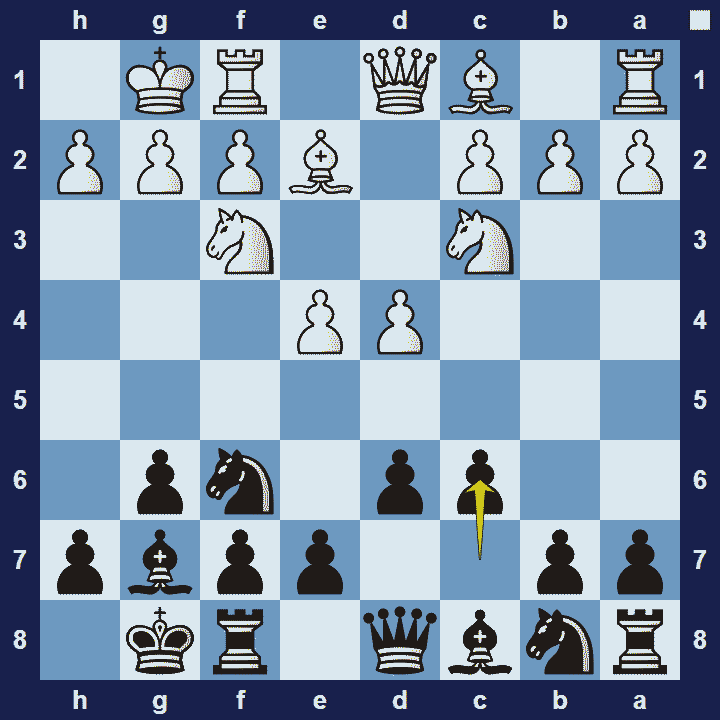

Pirc Defense
Pirc Defense
1.e4 d6 2.d4 Nf6
The Pirc Defense (pronounced peerts) is an opening for black, named after the Slovenian grandmaster Vasja Pirc.
Pirc Defense Basic Theory
The Pirc Defense is another example of hypermodern defense, meaning that black allows white to occupy the centre with their pawns. Black’s strategy will then be to attack white’s center with their minor pieces and to prepare the right moment for counter-strike in the centre. As a consequence of playing d6, black’s dark-square bishop must fianchetto to the g7-square in order to develop.
A popular variation in the Pirc Defense is the Classical Variation.
Pirc Defense Classical Variation
1.e4 d6 2.d4 Nf6 3.Nc3 g6 4.Nf3 Bg7 5.Be2 O-O 6.O-O c6
The Classical Variation of the Pirc Defense refers to the way white chooses to deal with black’s opening. White doesn’t get too ambitious and instead of being provoked into grabbing more territory than they can defend, white simply occupies the centre with their d- and e- pawns and develops their minor pieces naturally. This approach is a logical way to deal with hypermodern theory.
The Pros and Cons of the Pirc Defense
The Pirc Defense provokes white to be over-ambitious in the opening. If black succeeds in this, they will have good counter-attacking opportunities. However, if white isn’t provoked easily, there are many effective ways to play against the Pirc.
Images


Extra Information
Description: The Pirc Defence, named after Slovenian grandmaster Vasja Pirc, is a relatively new opening; while it was seen on occasion in the late nineteenth century, it was considered irregular, thus remaining a sideline.The opening began gaining some popularity only after World War II, and by the 1960s it was regarded as playable, owing in large part to the efforts of Canadian grandmaster Duncan Suttles.
Source: Link